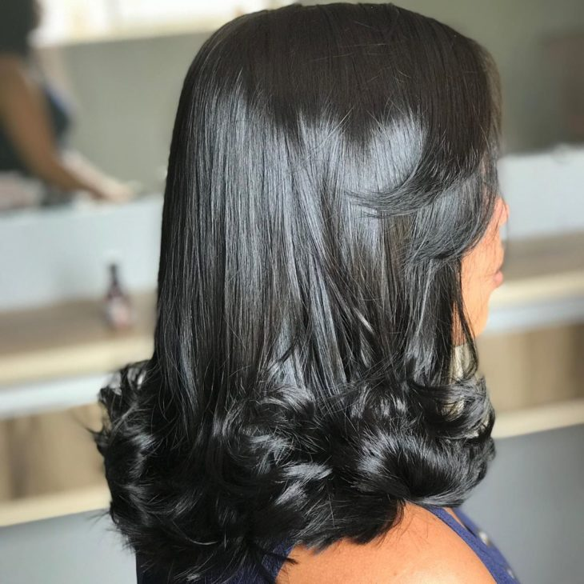
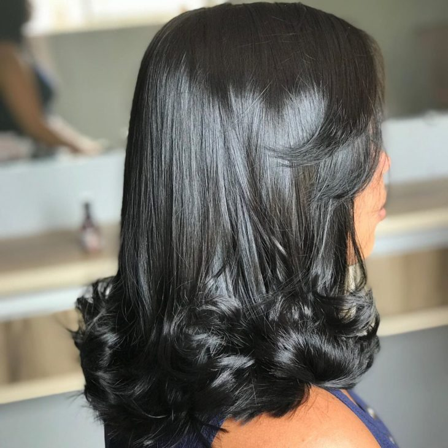

A grande tendência do momento e queridinho das famosas é o Long Bob: o corte tem a base reta e as pontas mais compridas
Já pensou em um corte chanel? É um corte clássico que foi consagrado pela estilista Coco Chanel e continua atual até hoje
Os cabelos cacheados em cortes retos podem ficar armados. Aposte em um corte em camadas para valorizar o formato do seu cabelo
"Fiquei maravilhada com o resultado do meu novo corte de cabelo! A equipe do salão é extremamente talentosa e atenciosa. Recomendo a todos!"
"Sou cliente fiel do salão há anos. Sempre saio de lá satisfeita com as cores e mechas que eles fazem no meu cabelo. Profissionais incríveis!"
"Os tratamentos capilares do salão realmente fazem diferença. Meu cabelo nunca esteve tão saudável e bonito. Agradeço à equipe pelo excelente trabalho!"